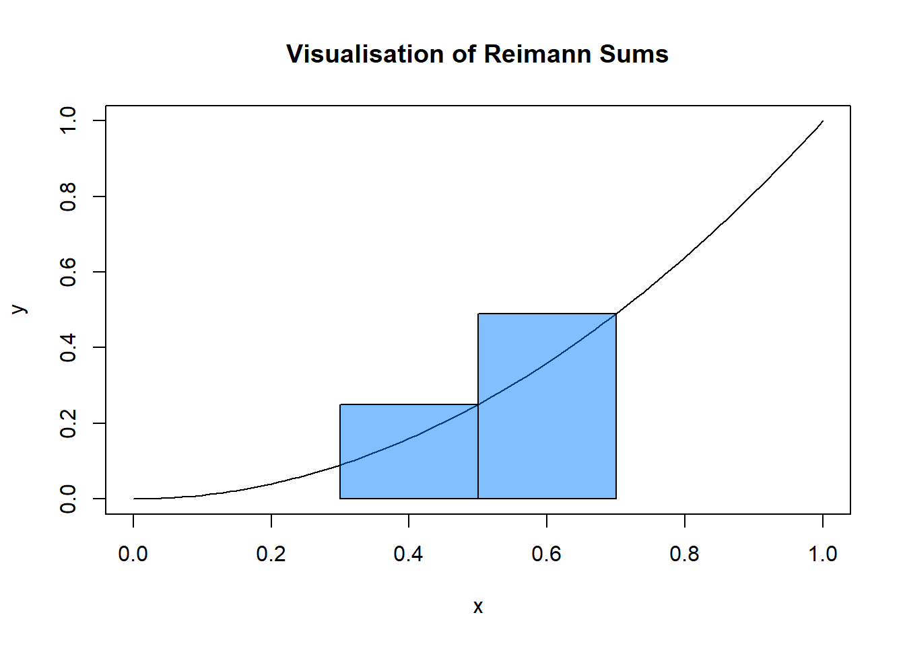
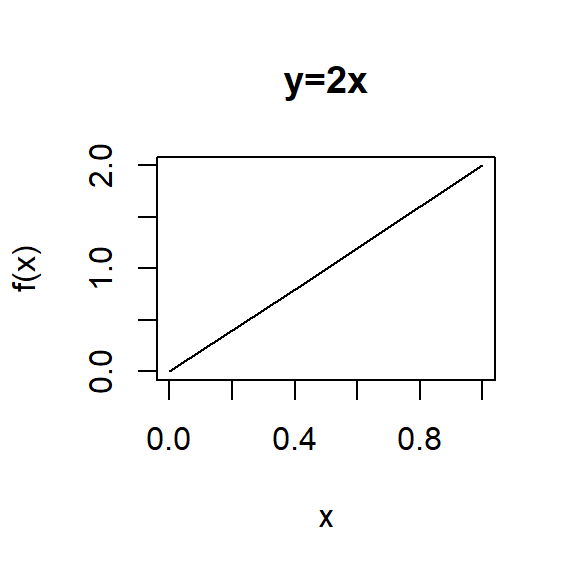
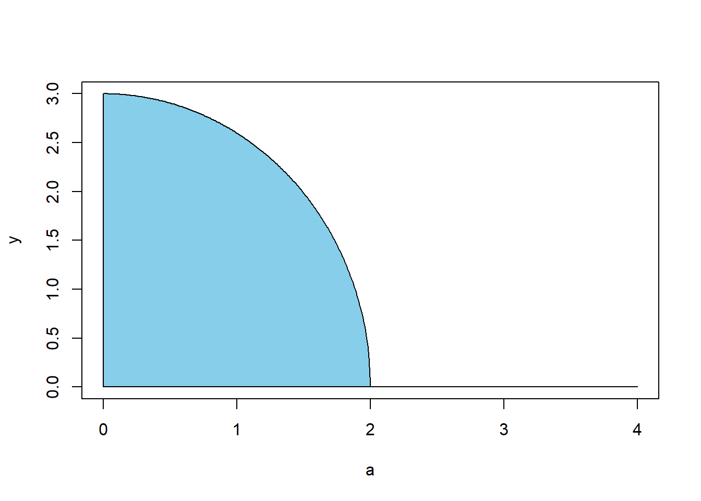

In this section we will explore the concept of ‘areas of planes’ into a more ‘pure’ mathematical view. Firstly, we will look at how we can use integration to work out areas in the \(x\)-\(y\) plane. Then we will briefly cover how to parametrise equations, which will set up the final part of this section, on covering areas across 3 dimensions (the line integral).
We begin by defining the basic idea of an integral of a function. We will take a function \(f: \mathbb{R} \rightarrow \mathbb{R}\). We will define this function by a simple equation: \(f(x) = x^2\). Now, the integral of this function \(\int_{a}^{b} f(x) dx\) can be evaluated by taking many rectangles of width \(dx\) across the region (between two limits \(a\) and \(b\)), and taking the sum of their areas. As the number of rectangles gets increasingly smaller (and the number of rectangles larger), this method tends to the value of the integral. So, using this method, we have defined the integral as the area underneath the curve between two points, \(a\) and \(b\). This method is called taking the Reimann sum of a definite integral. This method is explained for this (and more) examples in [Rsum].

As an example, we will now evaluate the integral \(\int_{0}^{1} 2x \cdot dx\). Let’s take a look at the graph of \(f(x)=2x\) between 1 and 0: 
Now, let’s split the x-axis into 100 intervals of width 0.01 and create 100 rectangles in these intervals with height of \(f(x_n)\) for the nth interval. Finding the area of all these rectangles can be calculated: \[\text{Area} = \sum_{n=1}^{100} 0.01f(x_n),\] where \(x_n\) is the nth interval along our \(x\)-axis. The result of this summation gives \(\text{Area} = 0.995\). If we work out the actual area of the triangle, the area is 1, so we’re already pretty close. If we were to take the sum to infinity however, and dx a very small number instead of 0.01, we would be much closer to 1.
By defining the integral this way, we can see that an integral can represent the area under a function. This should be an obvious statement as it was covered throughout A-Level, and the example above reinforced in MAS111. A completely accurate method would include using integration techniques to calculate the integrated function \(F(x)\) and substitute in the limits, which has been covered in college. We will be integrating functions in the next section, to talk about the areas of shapes.
As we have covered in the Semester 2 Individual Project and the start of the group project, there are analytical methods of finding the area of a polygon using different algorithms. In this section, we will talk about how to mathematically calculate the area of some polygons.
As an example of this idea, we will now calculate the area of an ellipse using calculus. The general equation of an ellipse is \(\frac{x^2}{a^2} + \frac{y^2}{b^2} = 1\). We want to show that the area covered by this ellipse is \(\pi ab\) to prove that this method works. First, we want to rearrange the equation of an ellipse such that \(y\) is the subject. We have \[y = \pm b \sqrt{1-\frac{x^2}{a^2}}.\] We are now going to obtain a formula for the top-right quarter of the ellipse, and multiply by four to give the total area. So, to work out this area, we take the positive part of the equation in terms of y, and integrate between 0 and \(a\), as shown in this image: 
This area is the formula \(\int_0^a y \cdot dx\), and so our total area of the ellipse is given: \[\text{Area} = 4\int_0^a y \cdot dx.\] Substituting \(y\), we have \[\text{Area} = 4\int_0^a b\sqrt{1-\frac{x^2}{a^2}} \cdot dx,\] which can be solved by a substitution. Let \(\sin{u} = \frac{x}{a}\), so \(dx = a\cos{u}\cdot du\). This makes our equation much simpler: \[\text{Area} = 4\int_0^{\pi/2} b\sqrt{1-\sin^2{u}}\cdot a\cos{u} \cdot du\]. So \[\text{Area} = 4 \int_0^{\pi/2} ab \cos^2{u} \cdot du\] \[= 2ab \int_0^{\pi/2} (1+cos{2u}) \cdot du = \pi ab.\qquad \square\]
As is visible above, it is possible to use integration to find the area of shapes given their function. You can also use the above proof to prove the area of the special case - a circle. In a circle, the \(a\) and \(b\) values are equal, so our area becomes \(\pi r^2\). I will not write out the full proof, as it follows the same structure as above (rearranging for y, and integrating), however you may wish to try this yourself if you need further validation that integration can be used for shapes and not just curves.
We will now refer and build upon the idea of integration to find the area of an ellipse, this time in two variables, which we have already explored in MAS111. This section will be an example of how we might use some of the content in that module, and prove the formula for the area of an ellipse in a different way.
To calculate the area of the ellipse, we will use a transformation from a unit circle in the \(u\text{-}v\) plane, and perform a mapping from this circle to the ellipse in the \(x\text{-}y\) plane. Let’s call this mapping \(T\). Let’s define this transformation.
If we let \(u = \frac{x}{a}\) and \(v = \frac{y}{b}\), then we can write the equation of the unit circle and the ellipse as \(u^2 + v^2 = 1\). For the ellipse: \[(\frac{x}{a}) ^2 + (\frac{y}{b})^2 = u^2 + v^2 = 1.\] As \(x = au\) and \(y=bv\), we define the mapping from the \(u\text{-}v\) plane to the \(x\text{-}y\) plane by: \[T(u,v) = (au, vb).\]
Next, we will define the double integral. The area of the circle \(C\) in the \(u\text{-}v\) plane can be translated onto the ellipse (Area \(D\)) in the \(x\text{-}y\) plane by the following: \[\iint_C \frac{\partial (x,y)}{\partial (u,v)} dA_{uv} = \iint_D dA_{xy} = \text{Area}(D),\] where the left is an area integral in the \(u\text{-}v\) plane, and the right is an area integral in the \(x\text{-}y\) plane. Because there is a change of co-ordinates, we must place the Jacobian in the integrand to the left-hand side, which we saw in MAS111 (if you want to refer to the course notes, we covered this in section 6.3.2). The next step will be to compute the Jacobian, and therefore the integral.
So, computing the Jacobian: \[\frac{\partial (x,y)}{\partial (u,v)} = \begin{vmatrix} \frac{\partial x}{\partial u} & \frac{\partial y}{\partial u} \\ \frac{\partial x}{\partial v} & \frac{\partial y}{\partial v} \end{vmatrix} = \begin{vmatrix} a & 0 \\ 0 & b \end{vmatrix} = ab.\]
Now it is possible to solve the integral in the \(u\text{-}v\) plane. So, \[\text{Area}(D) = \iint_C \frac{\partial (x,y)}{\partial (u,v)} dA_{uv} = \iint_C ab \cdot dA_{uv} = ab \iint_C dA_{uv}.\] We will again perform a change of variables to \(r\) and \(\theta\), a polar co-ordinate system - follow example 6.3.2 in the MAS111 course notes, and we get the result \[\text{Area}(D) = ab \int_{0}^{2\pi}\int_{0}^{1} r \cdot dr \cdot d\theta = ab \int_{0}^{2\pi} \frac{1}{2}r^2 \Big|_{0}^{1} \cdot d\theta = ab \cdot \theta \Big|^{2\pi}_{0} = \frac{ab}{2} 2\pi = \pi ab. \quad \square\]
This example, although it seems unnecessary to go through all of the trouble in comparison to the method before, the techniques used in the solution tell us a lot about how the double integral, multivariable functions, and area, works:
I would like to reference Dr Keith Wojciechowski ( in [Keith]) for this section - his video illustrates this method extremely well.
The next section will use the change of variables method to illustrate how we can integrate over a single-variable function, such as a curve, instead of the x-axis. Again - proving the area of an ellipse by double-integrals only shows us an example of this method; we can also use double integrals to find the area of squares, circles, and with more complex translations (which may only be possible computationally), larger polygons.
The line integral is somewhat a new concept for most readers, as it is not covered in any of the level 1 modules. This section will explain what a line integral is, and provide an example of a line integral in action to aid the reader’s understanding.
It is easiest to see what a line integral is by looking at the integral using Reimann sums. In a normal, single variable, definite integral, we take the area of a large amount of rectangles, with small width \(\delta x\), to produce a accurate estimate of the integral.
Now, with a line integral, instead of taking intervals along the x-axis, we take intervals along the line \(y = f(x)\), and the height of the rectangle we create is f(x,y). \(ds\) is used to tell us that we are integrating along the curve, like \(dx\) indicates we are integrating along the \(x\)-axis.
So, with a line integral, we have two components: a line, expressed by \(y = f(x)\), and a sheet, \(z = f(x,y)\), and we are finding the area between the sheet and the line, as illustrated in this image from [Lint]:
Source: i.stack.imgur.com/bq2TK.jpg
To begin solving a line integral, we must first understand how to parametrise an equation. Let’s take a curve, \(y=f(x)\). Then to parametrise this curve, we need to write \(x\) and \(y\) in terms of \(t\). So, for a curve, this is simple - we take \(x=t\) and \(y=f(t)\). For a circle, it’s a little different - the parametric equations of a circle are \(x=r\cos(t)\) and \(y=r\sin(t)\) in the anti-clockwise direction, and all points are defined between \(0 \leq t \leq 2\pi\). You should familiarise yourself with converting between cartesian and parametric equations before you continue further.
Now we will introduce the line integral. As you may recall from MAS111, the arc length of a curve is given by \[\int_{a}^{b} ds \text{, where } ds = \sqrt{(\frac{dx}{dt}) ^2 + (\frac{dy}{dt})^2} dt.\] This the translation that we need to convert from integrating along the \(x\)-axis to integrating along the line. So, for some \(x= g(t)\) and \(y=h(t)\), we have the following definition for the line integral: \[\int_C f(x,y) ds = \int_a^b f(g(t),h(t)) \sqrt{(\frac{dx}{dt}) ^2 + (\frac{dy}{dt})^2} dt.\]
Although this looks like we have made the integral much harder, when we look at the next example, we will see how this works, and how we have actually simplified our problem immensely.
Let’s take the line integral \(\int_D xy^2 ds\), where D is the right-half of a circle \(x^2 + y^2 = 4\).
There are 3 things that we need to solve our integral: 1) \(f(x,y)\) in terms of \(t\); 2) \(dt\); 3) The integrating limits.
Let’s look at the first requirement. For a circle, we parametrise such that \(x=2\cos t\) and \(y=2\sin t\) in an anti-clockwise direction. Now, we can work out that \(f(x,y) = xy^2 = (2\cos (t))(2\sin (t))^2 = 8 \cos(t) \sin^2(t)\)
Next we’ll look at the second requirement. To work out \(dt\), we first need \(\frac{dx}{dt}\) and \(\frac{dy}{dt}\), which are simple calculations: \[\frac{dx}{dt} = -2\sin(t) ,\quad \frac{dy}{dt} = 2 \cos(t).\]
Finally, we answer the third requirement. We are only looking at the right half of the circle, so the limits of \(t\) will be \(-\frac{\pi}{2}\) and \(\frac{\pi}{2}\) - these are the angles such that \(y = 0\), and by tracing \(x\) and \(y\) at known values, you will be able to see that we are making our way around the positive \(x\) side of the axes.
This makes our integral simple. We will use the following equation: \[\int_C f(x,y) ds = \int_a^b f(g(t),h(t)) \sqrt{(\frac{dx}{dt}) ^2 + (\frac{dy}{dt})^2} dt,\] and substitute in our values which we already have: \[\int_C f(x,y) ds = \int_{-\frac{\pi}{2}}^{\frac{\pi}{2}} 8\cos(t)\sin^2(t) \sqrt{(-2\sin(t)) ^2 + (2\cos(t))^2} dt.\] By expanding then factorising the operations inside the square root, we get \(\sqrt{(-2\sin(t)) ^2 + (2\cos(t))^2} = \sqrt{4\sin^2(t) + 4\cos^2(t)} = 2\sqrt{\sin^2(t) + \cos^2(t)} = 2\). This simplifies our integral down to \[\int_{-\frac{\pi}{2}}^{\frac{\pi}{2}} 16\cos(t)\sin^2(t) \cdot dt.\] This integrand can be resolved visually after taking out a factor of 16, so we get \[ = \frac{16}{3}\sin^3(t) \Big|_{\frac{-\pi}{2}}^{\frac{\pi}{2}} = \frac{16}{3}(1--1) = \frac{32}{3}.\] And so we have a solution.
We can imagine this example as finding the surface area of half a cylinder, that has been split by a plane \(z=xy^2\). Here is a graph that shows the area we have worked out, from Geogebra:
The areas in which the green plot recedes into the cylinder
Example 1 at [PaulInt] helped me follow the process of line integrals, along with the video at [Khan].
{kind=link}